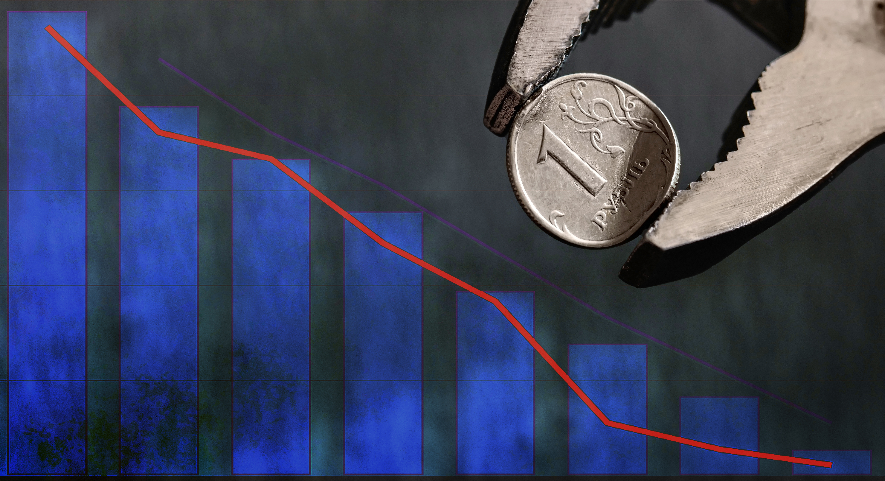
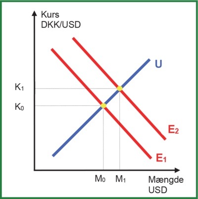
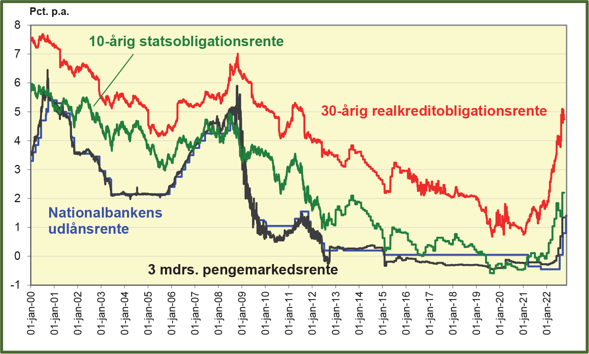
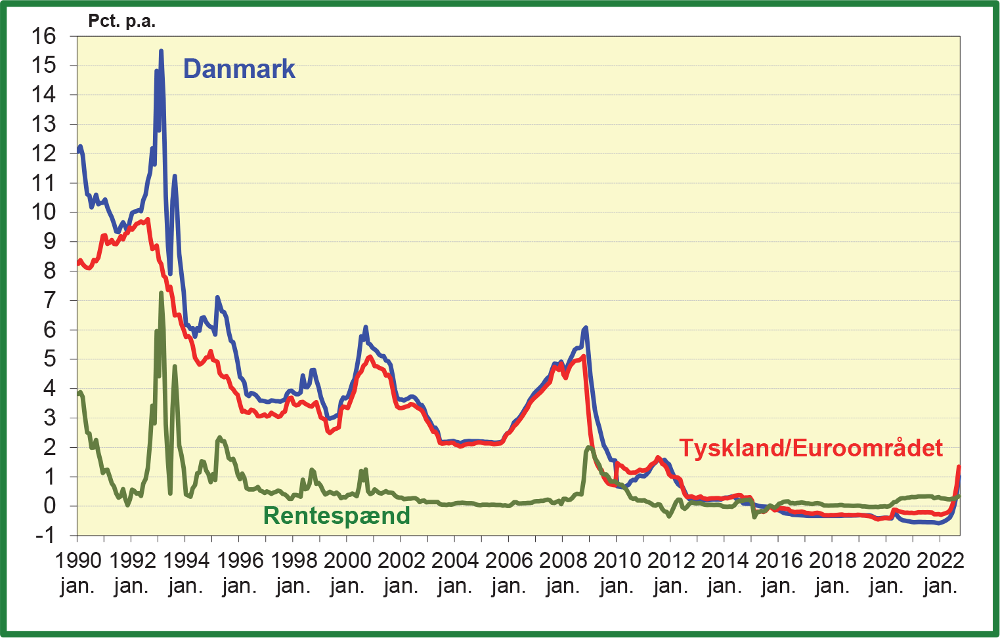

Case: EDC Living i Dragør og Makroøkonomi
Malene Harrild vi tidligere har mødt er en erfaren ejendomsmægler og den drivende kraft bag EDC Living i Dragør.
Malene vil gerne have bedre indblik i makroøkonomien, da dette har betydning for boligsalget.
Man må ikke kontakte virksomheden, i forbindelse med dette projekt.
Makroøkonomi - teori og beskrivelse
Forklar kort om niveauer og forskelle i nedenstående 2024 og 2025 nøgletal for dansk økonomi.
Der må gerne være en kort forklaring af nøgletallet, samt en eventuel perspektivering til andre økonomier.
| Nøgletal | 2024 | 2025 | Enhed |
|---|---|---|---|
| BNP (nominelt) | 3.020 mia. kr. | 3.120 mia. kr. | DKK |
| BNP-vækst (reel fratrukket inflation) | 0,9% | 1,8% | Procent |
| Inflation (kerne) | 1,5% | 1,9% | Procent |
| Arbejdsløshed | 5,8% | 5,8% | Procent |
| Offentlig gæld | 33,6% | 28,3% | % af BNP |
| Handelsbalanceoverskud | 46.900 mio. | 40.000 mio. | DKK |
| Eksport (medicin) | +50% | +15% | Vækst |
| Private investeringer | 1,2% | 2,5% | Procent |
| Statsfinansieringsbehov | 45 mia. | 82 mia. | DKK |
| Reallønnsvækst | 4,8% | 3,5% | Procent |
| CO2-udledning | 41.674.000 ton | 40.200.000 ton | Ton |
| Begreb | Forklaring |
|---|---|
| BNP (nominelt) | Samlet værdi af alle varer og tjenester produceret i Danmark i løbet af et år |
| BNP-vækst | Hvor meget økonomien vokser i forhold til året før (justeret for inflation) |
| Inflation (kerne) | Prisstigninger på varer/tjenester, uden energi og mad (som svinger meget) Eksempel: Tandlæge regningen stiger fra 1000 DKK til 1019 DKK |
| Offentlig gæld | Hvor meget staten skylder sammenlignet med hele Danmarks økonomi (BNP) |
| Handelsbalanceoverskud | Danmark sælger mere til udlandet end vi køber (overskud i milliarder) |
| Eksport (medicin) | Danske medicinproducenters salg til udlandet (fx Novo Nordisk) |
| Private investeringer | Penge virksomheder bruger på maskiner, bygninger og teknologi |
| Statsfinansieringsbehov | Hvor mange penge staten skal låne for at dække sine udgifter |
| Reallønnsvækst | Lønstigninger efter at have trukket inflation fra (købekraft) |
| CO2-udledning | Samlet udledning af drivhusgasser fra energi, transport og industri |
| Kilde | Rolle | Dækning | Link |
|---|---|---|---|
| Danmarks Statistik (DST) | Primær kilde til officielle danske data | BNP, inflation, arbejdsløshed, nationalregnskab | dst.dk |
| EU-Kommissionen | Økonomiske prognoser for EU | Vækst, gæld, inflation i dansk kontekst | EU Economy |
| Danmarks Nationalbank | Pengepolitik og finansielle data | Renter, statsgæld, valutareserver | nationalbanken.dk |
| Verdensbanken | Global benchmarking | BNP i USD, historiske tendenser | data.worldbank.org |
| Trading Economics | Prognoser og markedsdata | Realtidsøkonomiske indikatorer | tradingeconomics.com |
| Energistyrelsen | Energi- og CO₂-data | Udledninger, vedvarende energi | ens.dk |
| Nøgletal | Forklaring | Eksempel | Betydning i global kontekst og tolkning af niveauer/forskelle |
|---|---|---|---|
| BNP (nominelt) | Samlet værdi af alle varer og tjenester produceret i Danmark på ét år | Svaret til en virksomheds årsomsætning, men for hele landet |
Global placering: Danmarks BNP er ca. 0,4% af EU’s samlede BNP. Niveau: Højt pr. indbygger (top 10 globalt) pga. specialisering i medicinalindustri og grøn teknologi. Forskelle: Lavere end store økonomier som Tyskland, men højere end lignende små lande som Irland. |
| BNP-vækst | Procentvis stigning i den reelle økonomiske produktion | Hvis BNP stiger 1,8%, betyder det, at økonomien udvides med tilsvarende værdi |
Global placering: Under EU-gennemsnit (1,3%) og USA (2,5%). Niveau: Beskeden vækst afspejler moden økonomi med fokus på kvalitet fremfor kvantitet. Forskelle: Langsommere vækst end tech-drevne økonomier. |
| Inflation (kerne) | Prisstigninger uden energipriser og fødevarer | En tandlægeregning stiger fra 800 kr. til 816 kr. på ét år |
Global placering: Tæt på ECB’s mål på 2%, men lavere end USA (2,4%). Niveau: Stabil inflationskontrol gennem Nationalbankens politik. Forskelle: Mindre volatilitet end lande med højere energiafhængighed (f.eks. Tyskland). |
| Arbejdsløshed | Andel af arbejdsstyrken, der aktivt søger job uden held | 5-6 personer ud af 100 i arbejdsstyrken er jobsøgende |
Global placering: Højere end USA (4,2%), men lavere end EU-gennemsnit (6,5%). Niveau: Reflekterer fleksibiliteten i flexicurity-modellen, hvor virksomhederne nemmere kan hyre og fyre end i f.eks. Frankrig og Tyskland Forskelle: Strukturel arbejdsløshed i visse regioner kontra fuld beskæftigelse i tech-sektoren. |
| Offentlig gæld | Statens samlede gæld i forhold til BNP | Hvis DK tjener 100 kr., skylder staten 28 kr. |
Global placering: Langt under EU’s 60%-grænse og USA (125%). Niveau: Bæredygtigt niveau der tillader investeringer i fremtiden. Forskelle: Bedre gældsstyring end Sydøsteuropa, men højere end Norge (under 20%). |
| Handelsbalance-overskud | Forskellen mellem værdien af eksport og import | Danmark sælger for 46,9 mia. kr. mere til udlandet end det køber |
Global placering: Blandt EU's top 5 i overskud, men langt efter Tyskland. Niveau: Afspejler styrken i medicinal- og fødevareeksport. Forskelle: Mere sårbar over for global efterspørgsel end selvforsynende økonomier. |
| Eksport (medicin) | Vækst i salg af danskproduceret medicin til udlandet | Novo Nordisk sælger 100.000 flere insulinpenne i 2025 end i 2024 |
Global placering: Danmark er verdens 3. største medicinaleksportør. Niveau: Afhængighed af USA (70% af markedet) skaber geopolitisk risiko. Forskelle: Højere specialiseringsgrad end konkurrenter som Schweiz og Singapore. |
| Private investeringer | Virksomheders udgifter til maskiner, byggeri og teknologi | En fabrik investerer 10 mio. kr. i en ny produktionslinje |
Global placering: Under USA’s niveau, men over EU-gennemsnit. Niveau: Fokus på grøn omstilling (50% af investeringer). Forskelle: Mindre risikovillig kapital end Silicon Valley, men mere stabilt end opkomne markeder. |
| Statsfinansierings-behov | Beløb staten skal låne for at dække udgifter | Staten udsteder obligationer for 82 mia. kr. til vejprojekter |
Global placering: Lavere end gennemsnitligt i OECD. Niveau: Forventet stigning pga. grøn infrastruktur. Forskelle: Super kreditvurdering (AAA) bedre end f.eks. Frankrig (AA), hvilket reducerer låneomkostninger. |
| Reallønnsvækst | Lønstigninger korrigeret for inflation | En løn på 30.000 kr. stiger til 31.050 kr., men køber kun 30.800 kr. værd |
Global placering: Højere end EU-syden, men lavere end Schweiz. Niveau: Reflekterer stærke fagforeninger og høj produktivitet. Forskelle: Mindre ulighed end USA, men lavere dynamik end tech-sektorer i Asien. |
| CO2-udledning | Samlede drivhusgasudledninger fra energi, industri og transport | 41,6 mio. ton CO2 i 2024 svarer til energiforbrug fra 8,5 mio. danske hjem |
Global placering: Blandt EU’s mest ambitiøse (70% reduktion i 2030). Niveau: Højt pr. indbygger pga. energikrævende industri. Forskelle: Lavere end USA, men højere end Sverige pga. mindre hydroenergi. |

Kursen mellem DKK og USD er markedsbestemt ved udbud og efterspørgsel.
Denne figur viser hvordan udbud og efterspørgsel efter en valuta (i dette tilfælde amerikanske dollars, USD) bestemmer valutakursen (prisen på en dollar i danske kroner, DKK). På den lodrette akse ser vi valutakursen (DKK/USD), hvor en højere værdi betyder, at en dollar koster flere kroner. På den vandrette akse har vi mængden af USD. Den blå linje "U" repræsenterer udbuddet af USD, hvilket typisk kommer fra dem, der sælger dollars for at købe danske kroner. Den røde linje, "E1", er den oprindelige efterspørgsel efter USD, hvilket kommer fra dem, der skal købe dollars med danske kroner. Skæringspunktet mellem U og E1 (markeret med en gul cirkel) viser ligevægtskursen (K0) og den mængde USD (M0), der handles ved den pris.
Lad os nu sige, at efterspørgslen efter dollars stiger. Det kan skyldes, at danskere f.eks. er begyndt at importere flere varer fra USA f.eks MacBooks, Ralph Lauren Polo shirts eller de køber Tesla aktier, så de skal bruge flere dollars.
Det flytter efterspørgselskurven til "E2". Det nye skæringspunkt giver en ny, højere valutakurs (K1) og en større mængde dollars, der handles (M1). Dette betyder, at den danske krone er blevet svækket, da man nu skal betale flere kroner for at købe en dollar.
Vi kan sige at USD apprecierer i forhold til DKK, eller at DKK deprecierer i forhold til USD.

Figuren viser udviklingen i forskellige rentesatser over tid. Vi ser her fire forskellige typer af renter. De tre vigtigste er: Den 10-årige statsobligationsrente (grøn), den 30-årige realkreditobligationsrente (rød) og Nationalbankens udlånsrente (blå). Det fjerde er en 3 måneders pengemarkedsrente (sort) der typisk er styret af Nationalbanken.
De grønne og røde linjer viser, hvad det koster at låne penge på lang sigt via henholdsvis statsobligationer og realkreditlån. Disse renter afspejler markedets forventninger til den fremtidige økonomi, inflationen samt risikoen ved at låne penge penge ud over lang tid, hvilket investor kræver en højere risikopræmie for.
Den blå linje viser Nationalbankens udlånsrente, som er en rentesats, der er under Nationalbankens direkte kontrol. Denne rente påvirker andre renter i økonomien.
Den sorte linje er 3 måneders pengemarkedsrente, som Nationalbanken også har indflydelse på.
Som vi kan se er alle rentesatserne faldet i perioden fra 2000 til 2015, og stiger kraftigt fra 2021-2023 med forsyningsproblemer efter covid.
Grafen viser os, hvordan renteniveauet er steget kraftigt på grund af inflation i perioden 2021-2023 efter covid. Vi kan også se hvordan de forskellige rentesatser normalt følger hinanden.

Denne figur viser udviklingen i to forskellige typer af renter over tid: Renter i Danmark (blå linje) og renter i Tyskland/Euroområdet (rød linje). Den grønne linje repræsenterer forskellen mellem de to renter: rentespændet, eller renteforskellen. Den lodrette akse viser renteniveauet i procent p.a. (pro anno, altså årligt), og den vandrette akse viser tid.
Figuren viser hvordan renteniveauet i Danmark var meget højt i starten af 1990'erne men falder kraftigt mod 2000, og stabiliserer sig på et lavt niveau fra 2010 frem til 2021, hvor de begynder at stige igen. Figuren viser også det samme for Tyskland/Euroområdet dog på et noget lavere niveau.
Hvis man ser på figuren omkring perioden 2010-2013, ses at den blå linje (renter i Danmark) ligger lavere end den røde linje (renter i Tyskland/Euroområdet). Forskellen mellem de to linjer bliver stor, og den grønne linje der viser rentespændet er negativ. Det betyder, at det var billigere for lande at låne penge i Danmark end i Tyskland/Euroområdet under dele af Eurokrisen. Dette tyder på, at investorerne opfattede Danmark som en mere sikker havn i den økonomisk turbulente periode.
Årsagen til dette var, at investorerne så Danmark som en stabil økonomi med sunde offentlige finanser. De var bekymrede for de sydeuropæiske lande, som havde høj statsgæld, og valgte derfor at placere deres investeringer i mere sikre aktiver, f.eks. danske obligationer. Den store efterspørgsel efter danske obligationer gjorde, at renten på dem faldt, da det grundlæggende er udbud og efterspørgsel der afgør renten. Resultatet er, at vi ser et negativt rentespænd i perioden.
Kort sagt: Under eurokrisen flygtede investorerne til Danmark, som blev opfattet som en "sikker havn" som f.eks. guld og schweizerfranc. Dette pressede de danske renter ned og betød at Danmark havde lavere renter end andre lande i eurozonen.